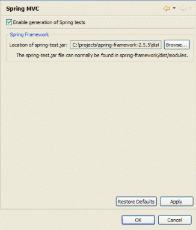
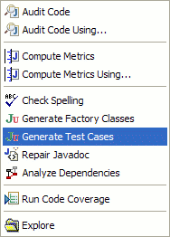

CodePro can now generate tests for the Spring Framework ( www.springframework.org). Spring is a popular web framework and an alternative to J2EE. It is a lightweight, non-invasive container and makes heavy use of the dependency injection and model-view-controller patterns.
In order to get ready to generate Spring tests, you need to configure CodePro with information about your Spring installation. Open Eclipse’s Preference dialog, and navigate to the
CodePro > JUnit > Spring MVC preference page. Select
Enable generation of Spring tests, then select
Browse... and navigate to the location of the
spring-test.jar library. This library can normally be found in the
dist/modules subdirectory of your Spring Framework distribution. The library contains necessary test classes from Spring, and is automatically added to the classpath of your test projects by CodePro.

Let’s start out with a simple Hello World example of a Spring controller:
public class HelloWorldController
implements Controller
{
public ModelAndView handleRequest(HttpServletRequest request, HttpServletResponse response)
throws Exception
{
return new ModelAndView("helloWorld");
}
}
In order to generate tests for this controller, right click on the class in the Package Explorer and choose
CodePro Tools > Generate Test Cases. This will create and open a new test case called
HelloWorldControllerTest.

public class HelloWorldControllerTest extends TestCase {
/**
* Run the ModelAndView handleRequest(HttpServletRequest,HttpServletResponse) method test.
*
* @generatedBy CodePro at 11/24/08 9:53 AM
*/
public void testHandleRequest_1()
throws Exception {
HelloWorldController fixture = new HelloWorldController();
MockHttpServletRequest request = new MockHttpServletRequest();
MockHttpServletResponse response = new MockHttpServletResponse();
ModelAndView result = fixture.handleRequest(request, response);
// add additional test code here
assertNotNull("ModelAndView should not be null", result);
ModelAndViewAssert.assertViewName(result, "helloWorld");
assertEquals(200, response.getStatus());
}
}
Like CodePro’s normal test generation, we create a fixture of the class under test, execute the method under test, and make assertions on the results. For Spring tests, we use Spring’s existing mock objects for certain method parameters (like
HttpServletRequest). We also use some Spring specific assertions on the results of the test method.
CodePro uses Spring’s built-in mock objects when possible. Spring’s mock objects are a group of about two dozen web and portlet related mocks. They allow you to test your code in isolation of actual web services. Where CodePro sees uses of
HttpServletRequest, we create fill out instances of
MockHttpServletRequest. In cases where we can determine which parameters the method under test asks for from the
HttpServletRequest, we’ll add those parameters to the
MockHttpServletRequest.
MockHttpServletRequest request = new MockHttpServletRequest();
request.setParameter("username", "testuser");
request.setParameter("forwardAction", (String) null);
request.setParameter("password", "testpass");
Similarly, if the method under test uses
HttpServletResponse, we’ll create and pass in a
MockHttpServletResponse instance. If the code modifies the
HttpServletResponse, for instance by setting up a HTTP redirect, we’ll create an assertion for the test case with that information.
MockHttpServletResponse response = new MockHttpServletResponse();
...
assertEquals(200, response.getStatus());
assertEquals("woot", response.getRedirectedUrl());
Web mocks
Portlet mocks
Miscellaneous mocks
CodePro’s generated tests make use of the Spring
ModelAndViewAssert class for testing the
ModelAndView class. This class is returned as the result of executing a Spring controller class. The
ModelAndView class holds both the model and the view information; they’re contained in one object to make it possible for a controller to return both model and view in a single return value. CodePro will generate assertions for the view name, and model keys and values if there are any.
ModelAndViewAssert.assertViewName(result, "cartView");
ModelAndViewAssert.assertModelAttributeValue(result, "message", "7 items in cart");
ModelAndViewAssert.assertAndReturnModelAttributeOfType(result, "cart", Cart.class);
When generating unit tests for Spring controllers, it is important to test them in isolation of the rest of the classes in the application. In Spring applications, your controller classes generally depend on other services to preform their work. These services could access databases, send emails to customers, or generally perform work that you don’t really want to do in the context of a unit test. In order to isolate your controller classes, when CodePro see them using a service it will create a mock of that service for the test. So if you have an
AccountManagement interface and an
AccountManagementImpl concrete implementation, instead of creating an instance of
AccountManagementImpl (which would modify an actual database), CodePro will use EasyMock to create a mock implementation of
AccountManagement.
MyController fixture = new MyController();
AccountManagement service = EasyMock.createNiceMock(AccountManagement.class);
fixture.setAccountManagement(service);
fixture.handleRequest(...);
These mock objects will allow any method to be called. If a method has a return type, the mock object will by default return
null or
0 as appropriate. In order to return other values, the user must set up the proper expectations on the mock object, and then switch the mock over to replay mode. For example:
MyController fixture = new MyController();
AccountManagement service = EasyMock.createNiceMock(AccountManagement.class);
EasyMock.expect(service.deleteUser("testUser")).andReturn((boolean) true);
EasyMock.replay(service);
fixture.setAccountManagement(service);
fixture.handleRequest(...);
For more information on using EasyMock mock objects, see easymock.org.
As of Spring 2.5 it is possible to define your controller classes through the use of Java annotations. CodePro recognizes controller classes that use these annotations and generates the appropriate tests. For instance, for the following controller:
@Controller
public class ImageController {
private final ImageDatabase imageDatabase;
@Autowired
public ImageController(ImageDatabase imageDatabase) {
this.imageDatabase = imageDatabase;
}
@RequestMapping("/imageList")
public String showImageList(Model model1) {
model1.addAttribute("images", this.imageDatabase.getImages());
return "imageList";
}
CodePro will generate the test case:
public void testShowImageList_1()
throws Exception {
ImageController fixture = new ImageController(EasyMock.createNiceMock(ImageDatabase.class));
ExtendedModelMap model1 = new ExtendedModelMap();
String result = fixture.showImageList(model1);
// add additional test code here
assertEquals("imageList", result);
assertEquals(1, model1.size());
assertEquals(null, model1.get("images"));
}
Both the @Controller and @RequestParam annotations are supported.
CodePro recognizes and generates tests for classes which implement the
org.springframework.web.servlet.HandlerInterceptor interface.
CodePro recognizes and generates tests for classes which implement the
org.springframework.validation.Validator interface.
The following example demonstrates a generated test that uses EasyMock mock objects, Spring mock objects,
MockHttpServletRequest parameters, and
ModelAndView assertions. This example is taken from the JPetStore example from the
www.springframework.org site.
public class SignonController implements Controller {
private PetStoreFacade petStore;
public void setPetStore(PetStoreFacade petStore) {
this.petStore = petStore;
}
public ModelAndView handleRequest(HttpServletRequest request, HttpServletResponse response) throws Exception {
String username = request.getParameter("username");
String password = request.getParameter("password");
Account account = this.petStore.getAccount(username, password);
if (account == null) {
return new ModelAndView("Error", "message", "Invalid username or password. Signon failed.");
}
else {
UserSession userSession = new UserSession(account);
PagedListHolder myList = new PagedListHolder(this.petStore.getProductListByCategory(account.getFavouriteCategoryId()));
myList.setPageSize(4);
userSession.setMyList(myList);
request.getSession().setAttribute("userSession", userSession);
String forwardAction = request.getParameter("forwardAction");
if (forwardAction != null) {
response.sendRedirect(forwardAction);
return null;
}
else {
return new ModelAndView("index");
}
}
}
}
CodePro will generate four tests for this method, one for each flow path. Here is one of those tests:
public void testHandleRequest_1()
throws Exception {
SignonController fixture = new SignonController();
fixture.setPetStore(EasyMock.createNiceMock(PetStoreFacade.class));
MockHttpServletRequest request = new MockHttpServletRequest();
request.setParameter("username", "testuser");
request.setParameter("forwardAction", (String) null);
request.setParameter("password", "testpass");
HttpServletResponse response = new MockHttpServletResponse();
ModelAndView result = fixture.handleRequest(request, response);
// add additional test code here
assertNotNull("ModelAndView should not be null", result);
ModelAndViewAssert.assertViewName(result, "Error");
ModelAndViewAssert.assertModelAttributeValue(result, "message", "Invalid username or password. Signon failed.");
}